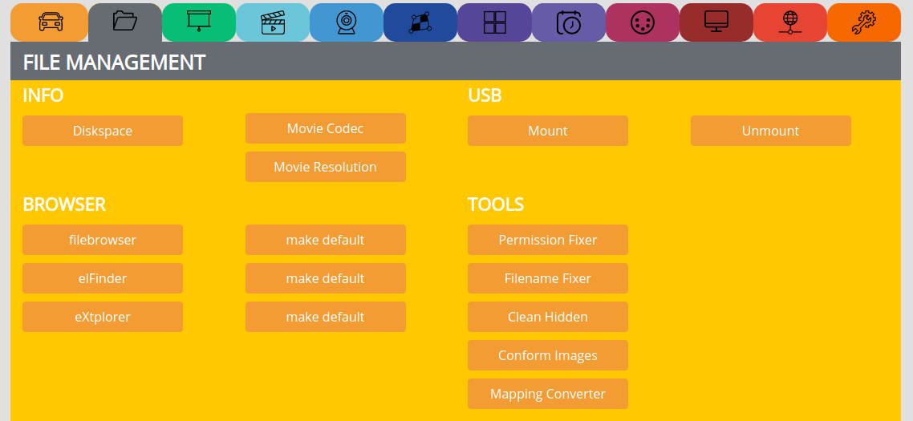
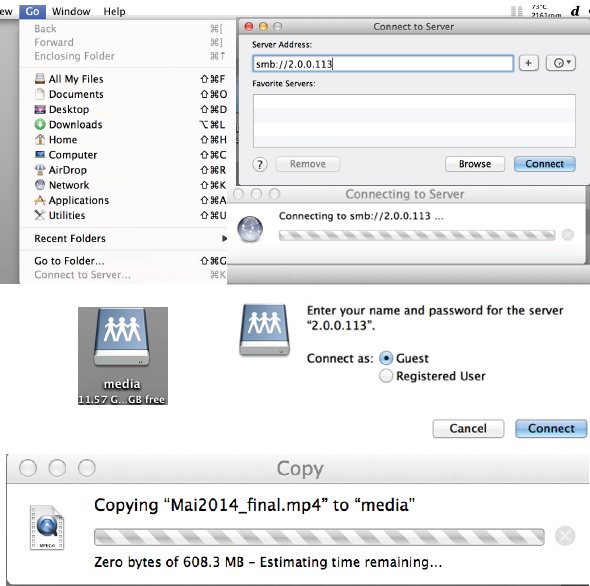

FILE MANAGEMENT¶
Here you can manage the files of the internal storge.
INFO¶
Diskspace => Show the diskspace
Movie Codec => Show movie codec infos
Movie Resolution => Show movie resolution
USB¶
Mount => Mount an USB stick
Unmount => Unmount an USB stick
BROWSER¶
select one of the 3 available filebrowsers
make the one you like as default
Note
filebrowser is not accessible over the internet
elFinder has a max. upload size of 2GB
eXtplorer is default, but might cause trouble with touch devices
TOOLS¶
Permission Fixer => if you lost write access to the storage, press this button
Filename Fixer => removes whitespaces, unreadable characters like à è é ö ä ü and shortens the Filename
Clean Hidden => especially when copying files vie Samba from OSX, you will get som .file files which cause the player to struggle, just click here to get rid of them
Conform Images => resizes all images to max. 1920 x 1080 and converts them to .jpg
Mapping Converter => Import mappings made in Mapio or Madmapper, see tutorial
Get Content => Get content from websource (since CP3.0.1), see tutorial , to shedule get content, use /var/www/sync/getcontent
UPLOAD FILES¶
To upload new content, follow this procedure:
In the shortlinks, click STOP to free all resources
Click the ‘Filebrowser shortlink’
There opens up a new tab with an eXtplorer window
Upload and manage your files in the
/internalBe patient while uploading and do not disconnect the power!
Note
For uploading large files (>400MB) copy from a connected USB stick
Filezilla for fast uploading via sftp://
Do not use empty spaces or special characters in your filenames, use TOOLS => Filename Fixer
Use the folder structure as given
If you are not able to up/download files, use TOOLS => Permission Fixer
Stop the player before uploading and managing content
FILEZILLA¶
Use sftp://
Open Filezilla, under Server enter the IP: sftp://2.0.0.*** (replace the asterix with the number of your PocketVJ WiFi name)
Hit Enter and you should be able to navigate to the folder
/media/internal/
Load or edit your files, be sure not to modify any other directories!
LOADING FROM USB TO INTERNAL¶
Supported file systems are: vFAT, FAT32, exFAT, HFS, NTFS, EXT4
See tutorial: https://video.pocketvj.com/AVideo/video/19/pocketvj_usb_connecting
SAMBA¶
In Finder go to: GO > Connect to Server
2. In the Server address bar type : smb://2.0.0.*** (replace the *** with the number of your PocketVJ WiFi name).
Connect, in the Password Prompt select Guest.
Your Finder mounts a Network device named: media Load and edit your files with finder.
Note
If you move large files, finder may tell you: copy zero bytes of…. Estimating time remaining… and it looks like finder hangs showing turning colorball, then just go and grab a coffee, it is copying in the background :-)
600MB may take around 16 minutes.
After uploading files via same, make sure to use Clean Hidden Files function to get rid of hidden files
See tutorial: https://video.pocketvj.com/AVideo/video/32/pocketvj_samba_share